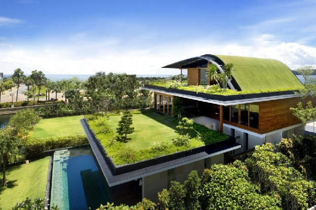

Arquitectura sustentable
El objetivo de este taller es compartir conocimientos y herramientas que ayuden a entender y proyectar los espacios en los que vivimos en relación al entorno natural.
Dinámica: Teórico/práctica. A cargo de: Victoria Martínez. Modalidad: Presencial.